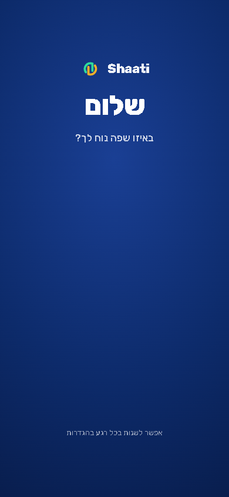

צילום מסך של הכניסה הראשונה בטלפון מדומה (מעבד איטי פי 4), באותה שנייה בדיוק. לפני: מסך ריק. אחרי: הדלתות כבר מתחילות, עם אותה כניסה של הכרטיסים (היא פשוט מתחילה מוקדם יותר). הקוד של ההתחברות של Google (כ-250 KB ועוד הסקריפטים של Google) נטען עכשיו רק אחרי שבוחרים שפה, כי בדלתות אין בו צורך.
